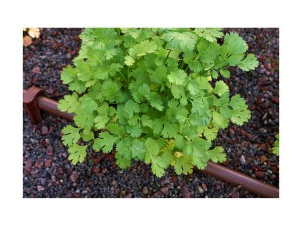

Coriandrum sativum
Common Names: Coriander, Cilantro, Dhania, Chinese Parsley
Local Name: Kothamalli (Tamil), Dhania (Hindi)
Family: Apiaceae
Origin: Mediterranean, Middle East; cultivated worldwide
Plant Type: Annual herb
Average Lifespan: Annual; 3–4 months growing cycle
| Growth Habit | Erect annual herb; bolts quickly in heat |
| Plant Size | 20–60 cm tall |
| Leaves | Lower leaves broad, lobed; upper leaves finely divided; aromatic |
| Flowers | Small, white to pale pink; in compound umbels |
| Root System | Taproot; shallow; does not transplant well |
| Climate | Cool to warm; bolts in high heat; best in winter in tropics |
| Temperature Range | 17–27°C ideal; bolts above 30°C |
| Soil Type | Well-drained, fertile loamy soil |
| Soil pH Preference | 6.0–7.0 |
| Sun Requirement | Full sun to partial shade |
| Water Requirement | Moderate; consistent moisture; avoid waterlogging |
| Can it Grow in Pots? | Yes; sow directly in deep containers |
| Fertilizer Schedule | Light feeding with compost; excess nitrogen promotes leaves over seeds |
| Common Pests | Aphids, whiteflies, powdery mildew |
| Propagation by Seeds | Direct sow; crush seeds lightly before sowing; germinates in 7–14 days |
| Digestive Health | Seeds and leaves used for digestive issues, flatulence, and as a carminative |
| Anti-inflammatory Properties | Rich in antioxidants; anti-inflammatory and antimicrobial properties |
Disclaimer: Information provided is for educational purposes only and not a substitute for medical advice.
Add your field observations here.